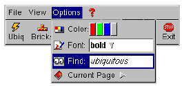
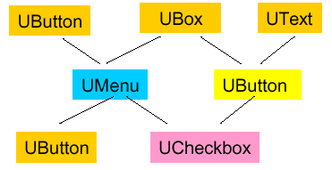
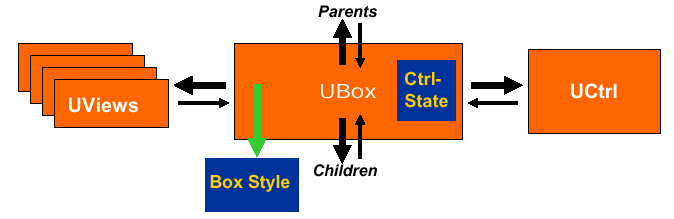
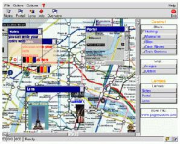
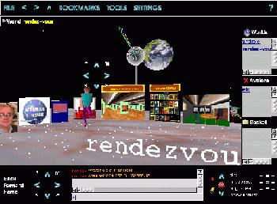

the ubit toolkit
eric lecolinet
enst
The Ubit GUI toolkit
An "atomic" architecture for GUIs
Eric Lecolinet / ENST INFRES - www.infres.enst.fr/~elc
Classical architecture: Widget model
Widgets = complex objects with
many attributes, many methods... -> complexity
...except the one I need... -> lack of flexibility
Static architecture
subclassing is often difficult (or impossible)
hard to reuse features from one widget to another
to many subclasses
Ubit Toolkit
"Atomic" architecture
small set of very lightweighted + specialized objects
can be dynamically combined
pseudo-declarative encoding with a procedural language (C++)
-> Construction game


Ubit "Bricks"
Viewable elements:
UStr, UIma, USymbol ...
Graphical properties
UColor, UBgcolor, UBackground, UBorder, UScale, UAlpha ...
transparency, translucency, scaling, zooming ...
View renderers
Interaction modes
Callback objects
Generic containers
Ubit "Widgets"
Dynamic model
Widgets = dynamic combinations of Bricks
containers = "glue" or "dorsal spin"
Sharable model
all objects can be shared (including "widgets")
attributes are inherited in the instance graph (DAG)
Example
Pseudo-declarative code in C++


UColor col = UColor::black;
UFont fnt = UFont::italic;
UBox& b1 = uhbox
( "This is "
+ uima("colors.gif")
+ UColor::red + UFont::bold + " multi-color text"
+ col + fnt + " that contains a "
+ ...
);
UBox& b2 = ubutton
( "Try!"
+ ubutton( UColor::red + " ")
+ ubutton( UColor::blue + " ")
+ ubutton( UColor::green + " ")
+ ubutton( USymbol::down + umenu(...))
);
b1.add(b2); // classical "OO" API
Callback bricks
Function and method call-backs
C++ templates => arg. types checked by the compiler
class MyClass {
void moo(int i) { ... }
...
};
void foo(char* s, double d) { ... }
main() {
MyClass* obj = new MyClass();
UBox& box = uhbox
(
"my button"
+ UOn::mpress / ucall(obj, 5, &MyClass::moo)
+ UOn::action / ucall("abcd", 3.14, foo)
);
}
Local and inherited conditions
Local conditions
can be applied to any object
UBox& box = uhbox
(
UOn::enter / UBgcolor::yellow
+ UOn::select / uima(minus.gif")
+ UOn::unselect / uima(plus.gif")
+ "my button"
+ UOn::action / ucall("abcd", obj, foo)
);
Global conditions
inherited in the instance graph
Sharing (1)
Bricks are "reactive" and can be shared
-> synchronization: parents are automatically updated
-> can also have callbacks

UStr str;
UColor col;
utextbox( uedit() + str );
ubutton( col + str )
udialog( col + uhbox( ...) )
with declarative call-backs
ubutton( col + str
+ UOn::select / uset(&col, UColor::red)
+ UOn::unselect / uset(&col, ucolor("#aabbcc"))
);
Sharing (2)
Containers (= Widgets) can also be "shared"
-> visually replicated in parents

Sharing (3)
Recursive replication
a graph of widgets can be visually replicated
can be rendered in a different way

Sharing and Multiple Displays
Widgets can be shown on remote displays
shared widgets -> automatic synchronization
-> groupware
Centralized architecture
one application / several GUIs
simple
limitations:
only a few users
network with enough bandwith
Containers and Widgets
3 types of generic containers
UGroup : "local context":
base class for mark-up tags
UBox : UView management
base class for "Widgets" : UButton, ULabel, UTextbox...
UWin : separate windows
base class for UFrame, UDialog, UMenu
Tags and Widgets
Trivial derivations of the 3 generic containers
can be dynamically changed one into another!
<b>... </b> == ugroup(UFont::bold + "abcd xyz" + ..)
ubutton( xxx ) == ubox( UMode::CanArm + UBorder::shadowOut + xxx )
utextbox( xxx ) == ubox( UMode::CanSelectText + UBorder::shadowIn + xxx )
UStr str = "bla bla";
ubutton( uedit() + UBorder::etchedIn + str + ubutton(...) )
Anatomy of a Widget (1)

DAG of objects
multiple UView trees
Anatomy of a Widget (2)
Widgets do not "have" attributes
Attributes are either:
default values defined in UStyle specifications
inherited from the instance graph
(dynamically) added as children
Generic controller
common to all Containers
parameterized by widgets
ex: UMode::CanArm, UMode::CanSelectText
can cooperate with sub-controllers
ex: ubutton( uedit() + str + ... )
Flags and Variants
Inherited conditions :
one specification => several variants
UFlag f1,f2,f3;
b = ubutton( f1 / ustr("abcde")
+ f2 / uima("whatever.jpg")
+ f3 / ufilebox( f4 /...)
);
x = udialog( udefFlag(f1) + b);
y = umenu( udefFlag(f2) + b);
z = utextbox( udefFlag(f3) + udefFlag(f4) + b);
Magic Lenses

Combination of two features :
multiple views
conditional specifications
1 specification => n different views
Zoomable interfaces

Combination of two features :
recursive scaling factors
conditional scaling ranges
b = ubutton( usrange(-3,-1) / ustr("abcde")
+ usrange(0, 3) / uima("whatever.jpg")
+ usrange(4, 99) / ufilebox( uscale(-2) + ...)
);
UScale sc = -1;
x = udialog(sc + b);
Transparency and translucency


Widgets can be:
fully transparent or alpha blended
transparent dalogs, menus, scrollbars, Control menus
umenu( UBgcolor::grey + ualpha(0.5)
+ ubutton(UBgcolor::orange + ualpha(0.3)
+ "bla bla bla")
+ ...
);
Transparent tools

Events can be:
filtered and modified by widgets
then sent to the widgets underneath
Bi-manual interaction
Ubit applications can handle:
several event flows
alternate sources of input (files, sockets, timers)
Each event flow:
can be identified
is controlled independently from others
Geometry management
Automatical by default
performed by the View Renderers
HBox, VBox, FlowBox, Table, Pane, Scrollbar
HTML "compatible"
udialog( uhflex()
+ utop() + menubar + toolbar
+ uvflex() + warea1 + warea2
+ ubottom() + statusbar
)
Styles & "fancy" widgets

Current Status
The library is reasonably small
22 000 lines of C++ code
(headers: 4 000 / implementation 18 000)
binary: 1.5 Mo
OS: Unix (Solaris / Linux / BSD / Mac...)
ported on embbeded Linux on the Ipaq PDA
Graphics implementation
X Window
Open GL (partial port)
Open Source:
www.infres.enst.fr/~elc
Open GL
Advantages
efficiency: alpha blending, scaling, etc.
rotations, immersion in a 3D space
Problems: 3D concepts noticeably differ
single graphics context
single window
global rendering (rather than "damaged" rendering)
clipping (-> stencils)
Single window problem
"soft" window mode managed by Ubit